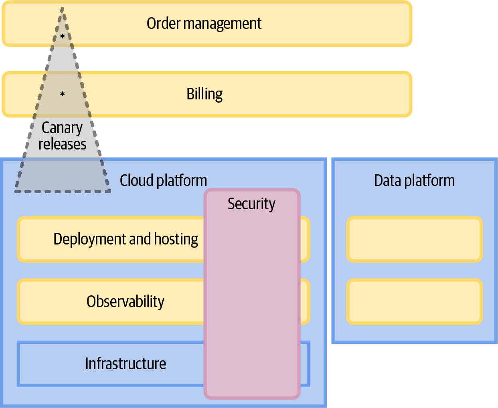
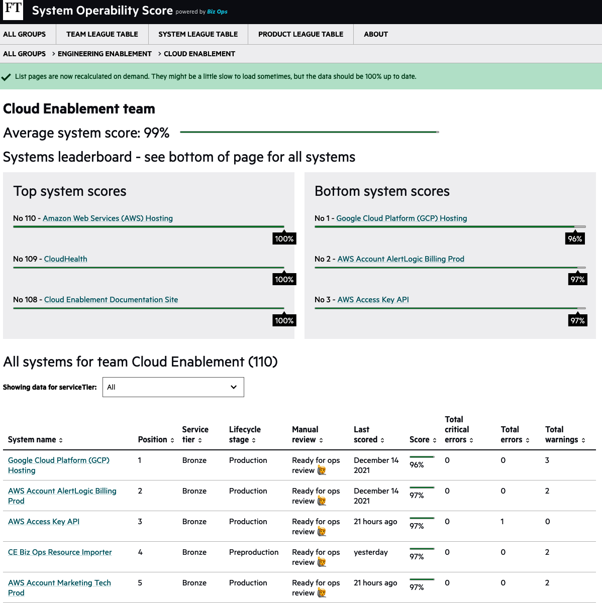

In earlier chapters I made the case for autonomous, empowered, cross-functional teams. They can move fast because they don’t have to wait for people outside the team to do something. That includes making decisions about the technology to use: autonomous teams get to make their own choices.
But there is a problem with this: those teams are making choices that optimize for their needs. Lots of local optimization, particularly where you have a microservice architecture that makes it easier to have diverse technology choices, can leave your organization with an unsupportable mess of different technologies. It also prevents global optimization, leaving a gap when it comes to things that matter to the department as a whole.
You really don’t want every team solving the same problems in potentially different ways, particularly for the problems that aren’t core to your business. There are very few businesses where having different continuous integration tooling between one team and the next is a business differentiator!
Product development (stream-aligned) teams should spend the majority of their time working on things that provide value to the business. Other teams should support them in doing that.
This chapter is about engineering enablement. One piece of that is building and supporting a platform that can provide on-demand and self-service capabilities to stream-aligned teams—and I want to talk about how doing it right means “applying software skills and product management thinking to infrastructure challenges.”1
There are other things an engineering enablement team can do to reduce the cognitive load for other teams, while ensuring that the organization can keep control of risk, cost, and complexity, and I’ll also cover those in this chapter.
I want to explain why I think a “paved road,” as championed by firms like Netflix,2 is the right approach. The premise for the paved road distills down to providing a set of tools and services for people to use, making it optional but having strong guidance on what is expected if you go off road. I’m going to talk about what the paved road should look like and dig into the benefits of keeping it optional. I’ll discuss how to decide which things to pave and what teams should expect to do if they go off the road.
When I say “paved road,” for many companies it makes sense for there to be multiple paved roads—for example, one for mobile development, one for backend, and one for machine learning. This is the approach Spotify takes and above a certain size of organization, you’ll probably need more than one path.3
I’ll walk through a set of principles for building a paved road. These principles are underpinned by a focus on developer experience and developer productivity. If your paved road doesn’t make people happy, you need to rethink your approach. That means you need to think about how to measure the impact.
This chapter is in the culture section of the book because to get this right, you need to change the culture of how infrastructure and platform teams approach their work. These teams are more like service providers now: they need to understand their customers and focus on enabling them to work effectively. We can be overwhelmed with choice and complexity with so many tools and SaaS options around. Teams focused on engineering enablement can have a huge impact by taming that complexity and allowing other teams to maintain a narrow focus on the business domain at hand.
As I write this in 2023, there’s a buzz around an evolving set of practices generally labeled platform engineering—e.g., see the InfoQ Cloud and DevOps Trends for 2023, which shows Platform Engineering in the “Innovators” space.
I absolutely believe this is a positive shift, but I really prefer to think of this as engineering enablement, because calling this “platform engineering” strongly implies that the platform is the most important thing.
I agree with Sam Newman that this can encourage a focus on the wrong things. If you are called the “platform team,” it’s easy to feel that your job is to build a platform. “Are they ever going to be in a position to think about alternatives? To realize a better way to solve the problems at hand? These are teams where they have only one tool, one hammer—and all problems better be a nail. Or else.”4
It’s also true that there have been platform teams for a long time. But a team focused on paving the road will think about things differently. A different name is a sign of that necessary mindset change.
One reason that Team Topologies practitioners now focus on “platform grouping” rather than “platform team” is that generally, there are multiple teams within the platform, and there will be teams of all types. For example, some that are aligned to a stream of work, some that are enabling other teams, and some that are providing a platform themselves. See Figure 7-1 for an illustration of what this looks like and how engineering enablement teams interact with stream-aligned teams.

I still find “platform grouping” doesn’t quite work for me, because the focus should be on reducing the cognitive load for stream-aligned teams. That might not require a fully fledged platform at all!
At the FT, we called it the Engineering Enablement group. Other organizations may call this Developer Experience, or Delivery Engineering, or just stick with Platform Engineering. The key thing is around who the customers are for this group: it’s other teams. And the purpose: to enable those teams to optimize for delivery of value.
The goal should be to do just enough to increase flow in other teams, working via low-friction, loosely coupled interactions wherever possible.
That said, the creation of one or more developer-focused platforms is often the right way forward. Let’s look at what that platform should provide.
Before microservices, and before DevOps, as a backend engineer I didn’t often interact with our platform and infrastructure teams. They’d set up servers and hand them over in the early stages of a project. If we needed a DNS change, or to add some monitoring of a server, we’d raise a ticket. Most changes were manual, and took time, but they didn’t happen that often. This meant a manual process didn’t impact us as badly as, for example, having a manual release process.
That changed when we started building microservices. New services are common, and involve infrastructure changes. Definitely not a good idea to be doing that manually, because it’s too error prone and time consuming.
As Charity Majors has pointed out, “Microservices change the game from ‘building code’ to ‘building systems.’”
Moving to the cloud may mean we no longer need to buy and configure hardware or run a data center—we may not even need to run our own servers anymore—but there are still lots of things that are part of our tech stacks that are not core business problems and someone needs to do them.
You could expect engineering teams to take this on, as autonomous teams—after all, asking another team to set up infrastructure for you doesn’t scale when you do this all the time as part of your day-to-day work.
Or, you can still have some sort of platform, but now the focus has to be on what it allows your delivery teams to do rather than the platform itself. That means optimizing for self-service, asynchronous tools, and if you can lean on a vendor, rather than building something yourself, you should.
Evan Bottcher of Thoughtworks has a definition of a digital platform that I really like:
A digital platform is a foundation of self-service APIs, tools, services, knowledge and support which are arranged as a compelling internal product. Autonomous delivery teams can make use of the platform to deliver product features at a higher pace, with reduced co-ordination.5
Note the focus on the users of the platform, and on making sure it all fits together. And also note that this is described as a “compelling internal product.” I’ll return to that later in the chapter.
Over the last decade, we’ve benefited from a huge increase in available frameworks and tools for building software. Individually, they are each great, but together they are overwhelming. Engineering enablement needs to bring these tools together and make them easy to use. So, what kinds of things should engineering enablement teams be doing? What should you include in an internal developer platform? What domains and what kinds of tools and services should you be considering?
The scope for engineering enablement should be anything that a team might need in order to build, release, run, and support software. Which things you focus on will depend on your own organization and architecture, and more importantly on what your customers find difficult and frustrating, but I’d expect to see some of the following:
Source control—although I expect most people to use SaaS here, you may want to implement additional controls6
Support for building and maintaining build pipelines and CI tools, including automated quality checks and security scanning
Support for deployment to environments, including tools for doing canary releases, using feature flags, and so on
Compute (VMs, or containers, or a serverless solution like FaaS)
Storage and databases
Load balancing and networks
Internal routing and communication (whether service mesh or not)
API gateways, CDNs and DNS, i.e., the edge
Observability tools such as tracing, logging, and metrics; also dashboards and alerting/escalation tools
Web components—the frontend benefits from a platform too!
I’m not going to say much more in this chapter about each of these areas, but in Part III I will give examples when discussing the different facets of building and operating a microservices-based system.
I do want to sound a word of caution though: the same concerns apply for teams in this engineering enablement domain as for any other team. You want them to have a clear focus, and not to become the dumping ground for “a miscellaneous collection of unrelated systems.”7
Don’t ask these teams to take on too much. Make sure they are staffed sufficiently and if necessary, split the systems across two teams.
It’s a good idea to lean on SaaS solutions and cloud providers wherever you can in developing platform services: it reduces the effort required to build and maintain services, although the teams do then need to develop strong vendor management skills (discussed later in this chapter). Once you get to a certain scale you will undoubtedly need some bespoke pieces, but by buying as many commodity components as possible, you can keep your focus on the things you cannot buy in, those that satisfy needs specific to your organization.
There are some things that are best looked at across the whole organization and should absolutely be considered when building platforms and tooling.
Some of this is about making sure cross-functional requirements like performance, security, and cost-efficiency are consistently addressed and managed. Some of this is about wide-scale changes, for example, migrating the whole organization away from a particular vendor.
Let’s discuss this in three parts: infrastructure (particularly keeping on top of costs); security and compliance; and anything that needs to be consistent across the organization (things like moving from data centers to the cloud).
When you allow engineering teams to set up their own infrastructure, you need some way to keep a handle on cost and efficiency across the whole estate. That can include:
Finding resources that are no longer being used—it’s easy for engineers to spin something up then forget about it!
Providing tools to shut down servers and other infrastructure overnight and on weekends for test or staging environments. Turning things off from 8 p.m. til 8 a.m. on weekdays and for the whole weekend can save 60% of the bill for things that are charged by the hour.
Spotting where people aren’t using the optimum resources, for example, the wrong instance types. Cloud providers add new instance types all the time, and a central team can invest in understanding where there are potential gains from a switch.
Providing platforms that are optimized for cost. For example, Skyscanner’s Kubernetes cluster utilizes AWS spot instances, which offer a big discount because you make use of spare capacity, but they may be reclaimed at short notice.8 This is an example of an enabling team working through the potential issues and providing a solution to stream-aligned teams that abstracts away the complexity.
I recommend keeping track of the cost savings, because this is one of those places where an engineering enablement team can demonstrate impact!
Building security into platform services removes risk for teams using those services. There is a fair amount of security engineering tooling that can be incorporated into your platform—for example, Snyk for finding vulnerabilities in your code and dependencies and Aqua for infrastructure security scanning.
In my experience, when a high-impact security vulnerability is found—something like the Heartbleed bug or the Log4Shell vulnerability—you need a central team that can work out the exposure and manage the response. The actual patching might be done by individual teams, but someone needs to have that wider view.
Similarly, with legislation like GDPR, an organization needs to understand which systems store personal data. A platform group can work with compliance teams to provide tools to make it easy to track this, and to support a timely response to subject access requests, for example.
There are two aspects to focus on: one, do you know what you have in your estate? If you don’t, you can’t really know whether you have handled a security issue. I will talk more about this in Chapter 9 when I cover ownership. The second aspect is to take responsibility for reacting to these cross-cutting issues. Not that these teams need to do all the work, but that they need to be able to assure the organization that all the necessary work is in hand. Generally, I’d expect an engineering enablement group to work with incident management to gather a group of people together to respond to a specific vulnerability.
A final organization-level concern is where you need to make a high-impact change in technology. This could be a strategic move—for example, moving out of data centers and into the cloud. It could also be in response to outside forces or perceived risks—for example, a vendor that is in trouble, or a product that is being deprecated unexpectedly.
I am going to talk about upgrades and migrations in Chapter 14. Those that happen in the platform are generally the most time-consuming and challenging. Anyone running platform services can expect to handle a fair amount of upgrades and migrations: getting good at this is worth it.
Pretty much anything that lots of your engineers use should be a candidate for the platform. But before you decide to include any of them, you should ask yourself, is it needed? Will this make it easier for our engineers to solve business problems?
You should aim to build the minimum you can get away with. The point isn’t to build a platform, it’s to reduce cognitive load for other teams. Not every company needs to run its own Kubernetes clusters!
Team Topologies talks about the thinnest viable platform. This could in theory be as simple as a wiki that lists all the available SaaS services with details of how to use them.
Almost every organization will need more than this, but the aim should always be to avoid the “undifferentiated heavy lifting” I mentioned in Chapter 1. There are very few companies where running your own infrastructure is a business differentiator (there may be a cost consideration of course), so aim to keep it simple and build only what is necessary.
Think about how much of your infrastructure stack can be provided for you. Could you use serverless components? That isn’t just about functions as a service. I would rather use the queues and storage options from my cloud provider because they integrate well and are patched and managed for me.
Going back to functions as a service, though: we used these very widely at the FT for anything based on events, including for things that in the old days would have been a cron job!
If you want to run Kubernetes, do you really need to run it yourself? Cloud providers and third parties can help here, leaving you to focus on areas that are more critical to your business.
And do you actually need Kubernetes? Could you deploy your applications to a PaaS? The FT’s use of Heroku in the mid-2010s removed a fair amount of toil from teams.
Maintaining and extending software takes time and effort. This is a good reason to only maintain, in the words of Abby Bangser, “custom platform documentation, processes and tools that improve your business’s ability to deliver value and are unique to your business.”9
The key insight from Abby is that what constitutes a minimum bespoke platform changes over time, depending both on the business context and on technology changes. There were many things that a platform had to include when we ran data centers that were no longer needed once we were in the cloud, and new things become important. Beyond this, even once you are running in the cloud, your base platform, provided by AWS, Google, Azure, or others, is not static. There is a constant evolution with new services and capabilities.
You should review your platform regularly to see whether you can realistically make it thinner by taking advantage of these changes. Gregor Hohpe calls this a “floating platform” (see his 2022 PlatformCon talk “The Magic of Platforms”).
When something you built becomes available as a product or commodity, you have two choices: keep your hand-rolled version, or move across. How do you decide which to do? I focus on the cost of maintaining the custom-built option, and the risk if something goes wrong with it.
One example where we moved across as new options became available comes from my time on the FT’s content platform. We ran containers before there were production-ready container orchestrators. We built our own. Once Kubernetes was production-ready we moved to that, and once our cloud provider offered managed Kubernetes, we moved again.
In contrast, the FT stuck with its own service catalog even once tools like Backstage were available, because the amount of time spent maintaining this and the risk if anything went wrong were both pretty low, and we still had some functionality heavily customized to our own organization’s needs.
Different organizations will make different decisions too. The FT didn’t introduce a tracing tool while I was working there; we continued to use our log aggregation tool and correlation IDs to visualize the path a request took through our systems. This didn’t take a lot of maintenance, likely because there wasn’t a lot of custom code involved; just a library to create and propagate unique correlation IDs on requests, and use of a vendor’s query and visualization tools.
MOO, an online custom print and design company, made a different choice, moving from an in-house visualization tool to a vendor-provided one to reduce the maintenance costs and benefit from the level of innovation a specialized vendor can bring.
It can be hard to make a move away from an internal tool. People have an investment in building and understanding how to use it, and it’s always harder to persuade people to spend time on a migration over building a new capability. The point is that once you do this migration, your time is freed up for innovation, rather than maintenance of a tool that is no longer of high, differentiating value.
When choosing what to do, aim to solve for the majority of your engineers. Simon Wardley has an interesting model of the different types of engineers you might have in your organization: explorers, villagers, and town planners.10
What type of person an organization needs depends on what you are building (often, you need different types of engineers for different parts of your organization). For instance, an explorer is comfortable with uncertainty. They will get something built quickly but you may not trust what they build to keep working. They are great for exploring new areas and prototyping.
A villager will take those half-baked things and turn them into products, informed by customers, bringing in money.
A town planner takes those things and makes them better, cheaper, and repeatable. They turn things into a commodity or a utility.
This may sound like a continuum and you may feel the need to build for all. However, stay focused on the needs that will impact the greatest number of engineers. For example, at the FT, I needed to build for villagers. We had a fair share of explorers, and we’d get a lot of feedback from them, but they were much more comfortable hacking things together than the majority of engineers. Build for the majority.
But what about the roles that engineering enablement teams play? Often, they act as town planners, in that they are making life easier for the villagers. However, I also expect them to do a bit of exploring and “villaging” as well: finding new things and making them usable for others in the organization. Enabling teams in the Team Topologies sense feel very much like explorers to me: getting out there and finding new capabilities, and very much on the leading edge.
Bringing product thinking to building a platform is a big cultural change in my experience. It’s also a bit of a challenge, because it can be difficult to find people with a product focus who also understand the technology. And I think you have to, because your customers are engineers.
Platform benefits from a good, technical PM with business acumen. Someone to focus on the work to clarify the potential impact of different initiatives, which helps with prioritization. Someone to seek that input and feedback too, and use it to make tough judgment calls, often to decline the edge cases that can be so attractive to many platform engineers. Someone to partner with engineering and help balance operations, technical debt, and more explicit value adds.
Liz Saling, director of software engineering at GitHub
I’ve found it very helpful to recruit people internally from development teams into the platform, because they bring with them a whole set of things that they have found difficult, confusing, or irritating. They also bring their existing relationships with the teams they came from: that can be enormously helpful too. And finally, they are used to building in a product-focused way.
So, what does a product focus really mean? It means you need to be speaking to your customers. The advantage here is that they are right there, in your organization, making it easier to talk to them. It means you know who they are. Also, they share at least some common context and constraints because of the way your organization works, even if their needs vary quite a bit.
You might think you know what your customers need without talking to them, since they are engineers and so are you. But this is a trap!
You still need to talk to your users because their needs and concerns will not be the ones you think they are.
A product focus means going beyond closing tickets or responding to feature requests. You should be doing product discovery. Form ideas about what is needed, and test those out.
Remember, your job is to figure out how to make the software engineering process work, and to make your customers more effective, not to build a state-of-the-art platform.
I saw a great talk from Jelmer Borst, Platform Product Manager at Picnic, where he pointed out that a platform PM has a very different outlook than a customer-facing PM.11 It’s a business-to-business-to-consumer (B2B2C) role, in that you need to build the tools and workflows that allow customer-facing PMs to achieve outcomes for their customers. Some of that is about enabling engineering, but it made me understand that you can’t do this without having a high-level grasp of your organization’s strategy. What are people trying to build and why? This will have an impact on what technology choices you should put in your platform.
Another difference for a platform product manager is that you don’t necessarily have a large enough user base or enough traffic to use tools like A/B testing effectively. Some tools in the product management toolbase just won’t help you. Later in this chapter I’m going to explain why I think people need to be able to opt out of some parts of the platform. This is important because with a captive audience, you don’t necessarily feel the pressure to build a product that wows them.
A final comment on treating a platform as a product is that you need to iterate. Build the simplest thing that you think will give value, and measure whether it has the impact you expected (I’m going to talk about metrics later in this chapter).
Think about this like product teams think about their work. First, build the minimum viable product. You get this in front of your customers so that they have something of value more quickly, and so that you can get rapid feedback on what works and what’s missing. You should be doing the same with your platform.
Don’t go away for six months working on some new feature, and then present it as a completed solution. You’re missing out on the chance to get feedback and to correct course.
It’s better to produce something quickly and to iterate. That iteration needs to be part of your plans from the start. Too often, I’ve seen teams build some platform feature, ship it, and move on, not taking the time to get feedback and never getting beyond that MVP.
What kinds of things should an engineering enablement team be doing, beyond building a platform? This section considers that question, particularly through the lens of moving away from our own servers and our own data centers and making more use of SaaS, PaaS, and the cloud in general.
Effectively outsourcing components of your infrastructure and weaving them together into a seamless whole involves a great deal of architectural skill and domain expertise. This skill set is both rare and incredibly undervalued, especially considering how pervasive the need for it is.
Charity Majors12
The move to the cloud and increasing use of SaaS tools means that we tend to have a lot more vendors involved in our tech stack. This is a place where an engineering enablement team can add a lot of value.
First up, by investing in the relationship with the vendor. This team understands the tools, sells them internally, and makes sure the company is getting the best possible value for the money they are spending. This can also include assessing any training that the vendor offers for suitability, and if it looks appropriate, making it available within the organization.
Next, by making it easy to use the vendor’s product in your organization. The engineering enablement team can help where the vendor doesn’t have a clear, well-documented set of functionality or a consistent set of APIs.
Often, it’s about providing a consistent abstraction to engineers, across multiple vendors and internal tools. It may also involve adding workflows and extensions to deal with your organization’s specific policies and compliance needs.
You don’t want to put too much abstraction in the way. It is deeply annoying to be unable to use the underlying vendor product because some functionality is not surfaced in the abstraction. The aim is not to be a gatekeeper!
By providing documentation, templates, libraries, etc., you can also ensure that there is a much more consistent use of the vendor across the organization. This can be very helpful when you need to do an upgrade or a migration.13
Finally, vendor engineering should include keeping a handle on risk. You should assess your vendors regularly around whether they are in financial trouble or are looking likely to be acquired by a competitor—which can often mean a forced migration or a sudden shutdown. You should also be aware of likely changes in how they price their product. Being an early adopter can mean a sudden shock when a vendor moves to more enterprise-level pricing!
There are many things I have done as an engineer where every single time, I need to look up how to do it. I will likely also be inconsistent. I probably won’t know the best approach. Normally, these are things that aren’t core to what I’m working on, but I need to do them to get my code live.
I don’t think I’m alone. Engineers don’t generally really enjoy writing YAML and Helm charts.
A team with expertise in a particular area—for example, a cloud enablement team that lives and breathes AWS config—can make a massive difference by writing APIs, libraries, templates, and code examples.
Let’s consider an example from the FT. Our cloud enablement team wrote a set of “blueprints” for people writing serverless code on AWS. These included common use cases like “read a message off a queue and stick it in S3.”
This allowed people to save time and effort: they could compose these together to quickly build a new app. It also meant a level of consistency between different teams’ configuration and codebases. That’s a great help when people move teams or you are trying to solve a production problem.
I want to include a big challenge with templates, libraries, and examples: managing change can be a massive headache. Once these things are out there, being used by teams, how can you make sure they get updated with changes?
Many platform engineering teams are focusing on APIs, because exposing a service via an API means you can decouple the implementation from the interface. The team calling the API doesn’t need to do anything when the internal implementation changes, where a copied template would require a change.
The other thing to note is that if you do find a way to roll out changes to a central template automatically, that does have the potential for some big impacts if you get it wrong. Skyscanner had a full global outage as the result of what seemed a relatively minor change to a template.
I’ll return to this subject of managing change in Chapter 14.
With a microservice architecture and autonomous teams, knowing what you have in your software estate can be difficult, but it’s also pretty important. What tools, programming languages, databases, etc. are people using? What services or APIs exist?
At the FT, we built our own service catalog, called Biz Ops. This listed every service, connected to a graph of other information: the team that owned the service, the groups they were part of, the communication channels to use to reach them. This allowed you to search for a service and find out what Slack channel to use to talk to the owners, or to find the codebase. Teams could still make their own decisions on documentation, as long as Biz Ops pointed people toward it.
I realize this is pretty bespoke! At the time we started to build Biz Ops, there was nothing available that we could buy that would allow us to track information about all our services. That’s no longer the case. Most tools that support building an internal developer portal, such as Backstage, also include a service catalog. I’ll return to the concept of an internal developer portal later in this chapter; all I really want to say here is that providing a way for teams to know what exists is an important part of engineering enablement.
Providing insights into the software estate can be very valuable.
Teams want to focus on feature work but there is always other stuff—patching, upgrading, documentation. If you can make it easy for them to identify problems with their services and prioritize these, you make it much more likely they’ll take 15 minutes and fix up some stuff.
An example from the FT: we wanted to improve the standard of our operational runbooks. Runbooks are a subset of the information about our systems, focused on providing our first-line team with information on how to restore a service that’s unhealthy, and how to escalate if they can’t fix the issue. Runbooks at the FT have a standard format, but in 2018 when we started this project, there were many runbooks that didn’t have much information in them at all.
We created a tool called SOS (System Operability Score), which scored the runbooks with a set of rules, weighted by the importance of the information. The rules and the weighting came from speaking to the first-line operations team that relied on the information.
Those scores were aggregated by team and by group, for a little gamification. See Figure 7-2 for an example leaderboard.

The insights provided by SOS had a big impact. Some teams went from 20% of required information being there to 99%. Some of that was about competition to “complete” the runbook, but a lot was about making it easy to understand what information would be useful. If you looked at SOS, you could see what fix would impact your score the most, and you could generally jump straight in.
The insights also had another benefit, unexpected as far as I was concerned: by scoring the runbooks, we gave people something they could easily measure, meaning this was a great basis for an OKR. This led to teams setting key results around increasing their SOS score by x%.
I appreciate that most organizations won’t want to build their own system to get this sort of insight. Luckily, the system catalog tools available now—for example, OpsLevel, Cortex, and Configure8—all support scorecards for categories like reliability, observability, security, and quality, allowing teams to identify where services aren’t complying with standards and need some improvement.
While some developers relish the freedom to experiment and try new tools, the vast majority of developers want, and possibly need, clear guardrails and “golden paths” for shipping and running their code. Most developers want to focus their time writing code—not running infrastructure and trying to figure out things that, for productivity’s sake, should just work, such as maintaining tooling, setting up dev environments, automating testing and so on.
Daniel Bryant14
A paved road defines a set of tools and services as the default for building software. Those tools and services should:
Work well together
Abstract away complexity
Be fully supported, meaning that if you follow the paved road, you should automatically get lots of things done for you—for example, backups, log shipping, monitoring, setting up of build pipelines
I’ve spent several chapters talking about the benefits of autonomy. To briefly summarize here, autonomy means:
You don’t have to coordinate with other teams to get things done. You should be able to release when code is ready. That means many small releases, which give you quick feedback and are easier to troubleshoot because there is only one thing that has changed.
You can also choose the right tools for your requirements, giving you the chance to identify new tools and technology that the organization as a whole can take advantage of.
And autonomy makes for happier teams, generally!
But there are also benefits to standardization, such as having a fairly standardized tech stack:
It’s less complex, making it easier to operate.
There’s less risk, because you don’t have to make sure each of the different technologies you are using have the appropriate licenses, are patched, etc.
It’s lower cost, because you don’t have to pay multiple vendors, and you are more likely to get volume discounts.
It’s much easier for services to be transferred between teams, and for people to move between teams when priorities change or to take on new opportunities.
Complete autonomy makes for a lot of time spent on low-value duplication of effort. Forced standardization can stifle innovation: you want to be able to bring in new ideas, and for teams to be able to solve their own problems.
Building a paved road is the answer. A paved road is the easiest way to get from A to B, easier than going through fields and over hedges. However, it is possible to take an alternative route.15
The paved road is an important concept. In fact, you can frame all the other work I’ve discussed so far in this chapter in the context of it: the engineering enablement team should treat their paved road as a product, taking a mix of vendor-supplied functionality and home-grown tools and services, building a coherent interface, well-documented, with insights to show where teams could make better use of the paved road or where they may need to take action.
A paved road provides an easy route to production, but one that isn’t mandatory. You can go off road, but it will be more of a slog. Using the paved road should be optional for two reasons. First, because it really is unlikely that one-size-fits-all across your entire organization. If teams have specific needs, they should be free to build—or buy—something that meets those needs. The teams will, however, need to support whatever they build, meaning they will need to do upgrades, security fixes, etc. They will also need to comply with the policies and processes of your organization. A paved road makes the common cases easy, but it does leave room for exceptions. If the road is a freeway and you are on a skateboard, you should probably take a different route.
The other reason the paved road should be optional is because if teams are free to opt out of using your internal platform and services, it requires the teams building them to really think about how to build something people want to use. This can be challenging and difficult to deliver, and sometimes it takes a few iterations to get there.
Ultimately, a good paved road will almost always be chosen by product development teams, because it should be easier by far than hacking their own path. Most people want to be able to follow a paved road from idea to production, so that they can stay focused on the value they deliver.
Having the majority of your engineering team following the paved road also brings benefits for the organization because it increases the level of standardization, specifically around the less exciting but essential parts of building systems.16
However, there will always be places where a team needs or wants something different. This could be out of necessity: the paved road doesn’t support some functionality the team needs. It can also be because people want to innovate or experiment. This is something that should be encouraged! Often, a team will try something out and decide it’s not as good as it looked. Sometimes, people will find a new approach that provides a lot of value to them and potentially to other teams, in which case it should generally be incorporated into the paved road as an alternative or a replacement.
Where teams do go off road, it’s important to give strong guidance on how to approach this. What choices are they free to make? What are the requirements their solution needs to comply with?
Let’s explore this further.
What kind of capabilities are candidates for the paved road?
First, anything that needs to be done to meet expectations of what it means to build something right. For example, if you want logs to be sent to a central log aggregation service, your paved road should make that happen with the minimum of effort.
Second, anything that many teams need to do. A problem that only one team faces is usually best solved within that team.17 So, if there are lots of teams using Postgres then great, invest in support for that. But if you have one team using a very specific data storage solution, I’d expect them to be the ones investing in tooling around it.
Finally, there is a question of how much will be gained by solving the problem centrally. If it takes a few hours to get up to speed with a particular tool and do what is needed, it may not save a lot of time to provide this capability. However, if there are bad consequences of getting this wrong, maybe it is still worth tackling. I’m thinking here about risk and cost concerns.
You should approach building capabilities in a modular way, so that lower-level abstractions get composed together—for example, building a test environment as a service that includes a database, queues, etc. This means that when someone needs a slightly different shaped test environment they can still use these lower-level components and just manage the delta between the paved road test environment and their own.18
What the paved road will look like is going to be different for different organizations. You may even have more than one paved road. For example, Spotify has different paved roads for backend and frontend applications.
Specifying the paved road is often about taming an existing sprawl—for example, you are trying to go from five programming languages down to three, or to standardize on the build and deploy pipeline tooling. How do you decide which option to choose from the many that are out there in your organization?
Charity Majors has a great blog post about this, and suggests starting by setting up a small council of trusted senior engineers. It’s important to share the thinking behind the choices being made, and to get feedback.
Another thing I’ve found to be very useful is to look at what tools people have actively chosen to use. If a developer found a way to pay for a tool on a credit card and more and more teams are moving to it, that is a great candidate for adding to a paved road. If that was a SaaS tool, for example, then the central teams often have to do very little beyond setting up a contract with the vendor and making the tool available to all teams.
Picking a tool that people already like and use and making it more widely available is generally low risk and high reward. Do it!
Before we move away from this topic, I want to expand on why a paved road should be optional. This is often a sticking point for existing infrastructure and platform teams, for a number of reasons.
They are experts in particular areas of technology: why should some other engineering team be able to go off and hack something together? After all, won’t it be risky, costly, and just worse than what this team can provide? And won’t that team just want to do the fun stuff then hand it off to the central team to manage? Or worse, will they make the case for this new approach and we’ll be out of a job?
Let’s break this down. By making the paved road optional, you can receive very useful signals from your customers. If they opt out of using the tools you have built, this is something to pay attention to: after all, this is a fully supported path to production. If people choose to take the painful route of hacking through the jungle rather than following your path, you need to work out why. Maybe you haven’t understood what they actually need, or maybe what you’ve built is nonintuitive or clunky.
People not being required to use what you build is valuable. It helps to stop teams from going off and spending six months on a gold-plated solution to the wrong problem. Hopefully, it prompts you to talk to your prospective customers more, and to iterate more. It should also help you to avoid building things that are already available as a SaaS solution from a third party.
My former colleague Matt Chadburn wrote about this as “free market software development”. His blog post is worth a read in full, but I want to pull on one strand here, which is that internal teams shouldn’t see the ability for teams to choose external providers as a threat. Once you start to see yourself as service providers, you should have a big advantage over external alternatives: you only need to build for your organization, and you can offer a much more tailored solution. You also have very good access to your customers!
Of course, you need to build things differently when you are a service provider. You need to form a relationship with the people who are going to use your service, you need to make it easy to start using the service, and you need to document it well. I will talk more about what it means to be a service provider (this goes back to the idea that the platform is a product) throughout this chapter but particularly in “Principles for Building a Paved Road”.
The next reason for making the paved road optional is that sometimes, teams will need something different, something the paved road doesn’t cover. This may be something that is pretty niche, so you wouldn’t necessarily ever want to add it to the paved road—for example, a specialized data store. Other times, they need something that is on your roadmap but not available right now, when the team needs it. This kind of thing happens a lot, because there are always more things you could be doing as a platform team than you have time to do. Often, an engineering enablement team will hear about a need only when a team really, really wants that need catered to right now. Having an understanding that there are ways to go off the paved road, and expectations that go alongside that, is going to make your life easier: I’m going to talk about how to go off road shortly.
A strong recommendation from me is to be very wary of blocking a team from going off road because you are “about to build a solution,” unless that is literally the next thing you are doing. Too often, you change your priority and the team that was waiting on you ends up frustrated and angry.
If you genuinely are about to start work on it, ask this team to partner with you. If not, discuss any concerns you have or any constraints people should know about, and let them get on with it.
The final reason for not having a mandatory paved road is that there’s no guarantee that the central team will have the best ideas. If you’ve spent a lot of time in becoming the expert in a particular technology, you are invested in it. You may not spot an alternative that would meet people’s needs just as well but be easier or cheaper to use.
This is where an organization needs to be aware of the changing terrain and make sure that people get the chance to keep up. In modern software development, the tools, processes, and tech we use change frequently. Make sure you hire people who are adaptable and comfortable with change, give them job titles and job specs to match (for HR reasons, it’s a lot harder to move away from Java if half the team has the job title “Java developer”), and offer training and support on new technology.
As the FT moved from data centers to AWS, we paid for training and certification. We also set annual goals for the number of people to become certified. This paid off because people learned new skills and changed roles rather than leaving.
As Team Topologies suggests, your aim should be to build the thinnest viable platform. If that is no platform at all, that’s excellent news. If you can use platform as a service solutions and focus your efforts on tooling and integration, great. This is why it’s better to view the mission of the team as reducing cognitive load rather than building a platform.
If the platform doesn’t have what they need, teams should be free to go off road but that doesn’t mean they can hack something together and then throw it back to the platform team. Not everything will be handed back, and there are responsibilities in the short term to consider too. Going off road comes with expectations and responsibilities.
These expectations are threefold, around quality, responsibilities, and outcomes:
Whatever a team buys or builds that covers platform functionality needs to comply with guardrails the organization defines around things like costs, security, operability, etc. This tackles the concern that people will just hack anything together. Of course, you need some way to track adherence to these guardrails, which is where some automated scoring, like that I mentioned earlier in the chapter, can really pay off because it guides the team on what it needs to do and shows where there are gaps.
If you go off road, you are responsible for supporting and maintaining what you build, including out of hours if this is going to be used for critical services. This in itself can stop teams from going off road, which is good: this needs to be a conscious decision, since introducing alternatives “because they are better” can lead to bad consequences. Either you keep two things running in parallel, leading to duplication of work; or migrate to a single choice, which is usually a costly, painful, and boring process.
Is this feature only ever going to be needed by one team? Or is it likely to be something other teams will want or need to use? You don’t want a stream-aligned team to own it forever in that case: operating a platform or service for other teams isn’t its purpose. I should note that you may choose to fold something back into the platform even if it is fairly niche, if it fits with the skills and domain knowledge of a team there.
If the expectation is that the capability is going to be folded into the platform, either to run in parallel with an existing approach or to replace it, both the team working on it in the short term and the platform team need to agree on that happening, and what the capability needs to look like for the handover to go ahead. For example, that it meets platform standards, is documented, has tests, and that the platform team has had any relevant training.
You may not know up front which of these options is better, but they need at least to be discussed early on, or you end up with unhappy teams. Either a product development team finds themselves owning something long term, even being asked to support other teams, without being able to hand it over; or a platform team has to take on something that wasn’t built with a service provider mindset and has to make it production-worthy.
Despite the expectations and responsibilities, it’s important that it’s not too difficult to make the decision to go off road. In particular, it should be pretty easy to experiment: there should be space for innovation and experimentation without having to fully productionize something. As an organization, it’s important to understand what can be left out of the early iterations. For example, you may allow a lower level of resilience so people don’t have to implement a multiregion production environment.
At some point, you need to transition from viewing this as an experiment, and so you should be clear on what marks the end of the experimental phase: for example, this could be based on running the experiment for a set number of weeks in production. You should review whether it worked out or not, and decide what happens next.
This is a good time to report back on this off-road experience, for example via a blog post, tech talk, or open review session. The aim is for everyone to learn from this experiment.
Going off road shouldn’t be the end of it. As an organization, you should be aiming to look at what the team did, with a few options in mind. This shouldn’t be a huge gate to get through—no 20-page document to write. You need a group with representatives from across the department where you can weigh up what to do next.
Was this absolutely awesome? Did the new approach solve the team’s problem and does it look like something other people would benefit from? If that is the case, could your central enabling teams adopt it?
Was it actually pretty bad? Is this now something your central enabling teams could tackle? If so, can they learn from the experiences of this team, by working with them and then by migrating this team back onto the (new) paved road?
Or is it fine as it is: a niche need, that can stay with the team that built the solution?
One thing to be wary of is a team accidentally—or deliberately—ending up building their own platform capability, i.e., something that other teams want to use. You will slow down a stream-aligned team quite a lot if you let them become a platform team as well. They will no longer be able to focus on a single stream of work: which is more important, the product they are building or the customers of this platform capability?
If it looks like a platform, it needs to be owned by the platform group, eventually.
You don’t need to build a paved road from scratch. When we started to build platform tooling at the FT there wasn’t much out there, and so we built our own service catalog, documentation hub, etc.
That’s no longer the case. If I was leading an engineering enablement team now, I would start by choosing an internal developer portal (effectively, a frontend for infrastructure). This provides a framework for paving the road, allowing the team to focus on aspects that are specific to your organization.
Backstage, from Spotify, is a powerful and open source platform for building developer portals, but it is definitely a platform: you need to build on it, and customize it. There are also vendor solutions, for example OpsLevel and Cortex, that are a bit more opinionated and more out-of-the-box.
What you can expect from an internal developer portal is:
A way to catalog your services, teams, and tools
The ability to spin up new services from a template in a standard way
A single place for documentation
Integrations with other software so that too can be managed via the portal
Vendor solutions like OpsLevel and Cortex also support scorecards, helping teams see where they need to take steps to improve their services to meet organizational standards.
Whatever you end up using, you should aim to have the data available to you via an API so that you can build other integrations—for example, chatbots or CLI tooling. The portal is just one possible user interface.
You need the paved road to be widely used. Otherwise, the investment doesn’t pay off. You want a level of standardization where you don’t have too many different programming languages, CI pipelines, or hosting platforms, because each one you add needs to be supported.
How do you convince other teams to use your paved road when you can’t make them do that? The same way that other service providers do it!
First, make sure you build something people need, and then make sure that people know it’s there and can easily get started using it.
Finally, look for signs that you’ve gone wrong. If lots of people are going off road, then the paved road isn’t meeting people’s needs and you need to work out why.
How do you make sure you’re spending your time on the right things, and that you’re putting a set of tools together that will genuinely delight your customers?
You need to talk to them. You are building a product, so find out what the missing features are. The advantage is that your customers are right here working in the same organization, and you only need to build a product that will work for them, with the specific cultural and technology constraints that you know yourself.
If you think about all those teams that are out there, building developer tooling that they’re selling to people, they’ve got to try and find market fit across a range of companies. But if I’m building something at the FT, I can build something that’s very custom to what I already know exists at the FT. A trivial example, for instance, is that I would only need to consider supporting source control using GitHub because that’s what the FT has in place.
At the FT, we talked to our customer teams in various ways. Groups of teams within the org would have “developer huddles” where development teams would talk about problems. The engineering enablement team would send representatives along, to hear what people were struggling with. Sometimes, we could see things we could do to help.
Similarly, we would go to showcases for other teams, to find out what they had just done and what they were doing next. Often, we would hear about a plan and realize there was already something within the department that solved part of the problem.
We also sent out surveys, asking people about particular areas of tech and what they liked and didn’t like. This feedback shaped the work we scheduled—for example, the team that managed DNS found that people loved being able to manage DNS infrastructure as code, but that PRs often took a while to get merged. In the end, the change was often approved with no discussion because it was clearly a small, correct change. So the team added some rules to automate approval in these low-risk cases.19
When you start to get a reputation for being willing to listen, people will come and tell you about pain points; they’ll take the time to fill in your survey.
It’s a good idea also to look at what people are doing within their individual development teams and see whether that’s something that you could adopt and make more widely available. A team might build a really good tool, but it can be extremely hard for that team to then try and make it generic so everyone can use it—they will struggle to explain doing that over building something for their own direct customers. However, as a central engineering enablement team you could choose to take that on. At the FT, we’d look for things people liked and thought were good, whether this was something they’d built or something they’d bought, and we would look at making these tools more generally available.
Of course, people in the platform group would come up with ideas too, and there are some possibilities that only these expert teams can come up with: they are the ones that know what’s possible. These ideas need to be sense checked with customers. Sometimes, you need to show why it’s a good idea.
When sourcing ideas, be wary of people saying “Oh yeah, that sounds good.” Unless you have a commitment that they’re actually going to use the thing you build, then you are maybe not solving their problem. I think it’s easy to take lukewarm responses as a green light, particularly when it’s your idea and you like it. What you really want is for someone to say, “That sounds great, and we’re committing to spending a month adopting it next quarter.”
It’s worth assessing what you could do along two aspects: how much value it would bring and how difficult or time-consuming it would be to do it. It’s good to deliver regular value. Go for the quick wins!
Engineers rarely like the idea of selling or marketing what they are building, but it’s important. If you are a team in a platform group, you should make sure you are doing a bit of what Daniel Bryant calls “Internal DevRel.” DevRel is about helping people to adopt technology and providing a way to learn from your users. Internal DevRel requires exactly the same skills, focused inwardly.20
That means building examples of how to use your capabilities, going and working with people to help them get started, and generally getting out there and talking about what you’re doing.
These examples can include blog posts, both internal and external. It can mean being in the right communication channels and pointing people in the right direction, “Actually, that’s possible, and the documentation is here, come ask me if you get stuck,” for instance. Sam Newman reminded me about “testing on the toilet”, a Google initiative for marketing testing best practice: my own experience is definitely that a poster near the kettle works very well for UK organizations!
Also, take every opportunity to talk about your successes. Invite your customers to share their stories. At the FT we would invite teams to talk at the Engineering Enablement showcase each month. Showing the impact you have for your customers matters because demonstrating your value to an organization as a platform group isn’t as easy as it is if you are building the main website, for example. You need to sell the platform to people who make decisions about where to allocate time and money within the technology department! Our showcases were good for this because they were something that tech leadership came to each month.
One more comment about marketing is to make sure people hear the message: talking about goals or progress in an all hands meeting is good, but you cannot assume everyone is there, or paying attention.
As Lena Gunn (@lenagunn) pointed out on Twitter, in a now-deleted tweet that really resonated with me: “one thing that happens in groups of 50+ is messages never really get to everyone, unless you make an extraordinary effort. if you say you can request a free popsicle at any time on email, group meetings, reminders, signs all over the place, someone still doesn’t know.”
This is something I realized as a tech director. Part of your role is to promote what your teams are doing, but you need to repeat your message, via different routes, until you personally are bored of saying it. Being told you are repetitive probably means you are getting it about right!
But it’s not just about getting it right. As an engineering enablement group, watch out for signs that you aren’t set up to build what people need:
Are you missing areas of expertise? Do you have teams that own particular capabilities where people are actually not too confident they can support the code?
Are teams overextended? Do they own too much?
Are teams building something that they could buy? Often, what happens is the team hasn’t noticed that things are now available that would do the job much more easily.
Do teams check that the things they built are being used? If they aren’t adopted, do they take the time to understand why?
Are you getting regular feedback from your customers? Are you having an impact on the metrics that matter?
Are you keeping on top of migrations? Do you ever actually turn things off?
Regularly checking for these signs gives you a chance to correct course and get back on track.
It’s worth encoding a set of principles for building engineering capabilities.
The principles should help in deciding what to prioritize and how to approach the work. By understanding and agreeing on what good looks like, you can avoid repeating the same discussions, which frees up time and energy.
It can be a very rewarding to build things for other engineers—you get to “scratch your own itch.”
However, I love Kathy Korevec’s point to “Remember, you are a chef cooking for other chefs.”21
“Developers can spot inconsistencies, antipatterns, and hurdles a mile away, so you must pay close attention to these details. At the same time, they know the challenges, understand the concerns, appreciate the details, and can provide crucial feedback to make your product even better.”
I’m going to cover the following important principles:22
Let people opt out if a capability is missing or doesn’t meet their needs.
Talk to your customers and solve the problems they are facing.
Provide tools people can use without having to contact you first.
Maintain and improve the things you build, and give lots of notice if they are going to be replaced.
Build consistent, well-documented tools with a good on-ramp.
Build tools with defaults that keep things safe, secure, and cost-effective.
Build APIs so people can use your tools in new ways, or use just some of them.
The CNCF Platforms working group recently published a whitepaper on platform engineering and I was happy to see they have a very similar set of key platform attributes:
Built as a product
Focused on the user experience
Great documentation and onboarding
Self-service
Reduced cognitive load for users
Optional and composable
Secure by default
As discussed earlier in the chapter, making a paved road optional means people can opt out if it doesn’t meet their needs, and that is a very useful feedback mechanism.
I am going to caveat it, though: there will be good reasons for some particular capabilities to be mandatory. I’m thinking about things like log aggregation, where you get the value from having the logs from all services involved in processing a request being in the same place.
So, be clear about what isn’t optional, but restrict this to capabilities where opting out of the paved road affects your ability to build and operate services effectively.
It seems obvious that any engineering capability should provide value, but I can think of plenty of examples where a team I was part of built something that didn’t get adopted, or only got adopted by a few teams.
Partly, that’s something to expect. It’s true for any product development: sometimes things you think are fantastic don’t find an audience. You should be OK with that. The important things are to be able to work out that you haven’t found your market, and to be willing to admit that and decommission the thing that wasn’t working (otherwise it is taking up time you could be using for something else).
You can improve your chances by making sure you talk to potential customers and listen to their feedback. Properly listen! And—to go back to the analogy that you are a chef cooking for chefs—make sure that you aren’t cooking what you would like to eat. If you are cooking for a vegetarian, don’t cook steak because that’s what you like best. Choosing languages or frameworks is often where this shows up, with teams choosing tools that work well for infrastructure engineers but aren’t what a software engineering team would find comfortable and easy to use.
Make sure you are solving a problem that teams are facing, and that cannot be solved by an off-the-shelf solution. Look for solutions already in place within your company—can you adopt and extend one of those?
That doesn’t mean you can’t be opinionated. You do need to make decisions, and that isn’t always going to be easy, because everyone will have an opinion and teams will have different needs. You aren’t going to please all of those teams.
Remember that the paved road isn’t mandatory, although some of the things it provides will be mandatory for any alternative solution too—for example, patching policies, or sending logs to the same central log aggregation service. This still provides teams that feel strongly that the paved road doesn’t solve their problem with other options.
Also, you don’t need to choose just one option. For many areas of technology it does make sense to offer alternatives. For example, you will likely want to support more than one type of data store, but you probably don’t want to support more than one type of graph database, document store, or relational database.
When you’re telling people about new parts of the paved road, make sure you explain constraints you’re hitting. That you chose a particular option because of cost, complexity, or lack of integration points is important information to share. Providing the context to your recommendations helps demonstrate that they have been thought through.
How do you know if you are providing value? I have found that the best guarantee that we were solving a problem that teams cared about was if we could get agreement from one of those teams to work with us to build and test the solution. At the point where you are actually scheduling work, you are making prioritization calls. This is where you find out whether you are solving a real problem.
Finally, test the value early. You should build the thinnest possible slice and get feedback.
Having discovered an engineering capability and read the documentation, there should be nothing stopping an engineer from using the capability immediately. That means they shouldn’t have to open a ticket with the help desk or get a PR approved by someone on a specific team.
There will of course be exceptions to this, usually around high-risk or high-cost changes. But the default should be to make it easy to get going.
In general, you want to automate things, and in particular, you want to automate repetitive manual tasks. With microservices there are many things you’ll have to do tens or hundreds of times, from spinning up servers to shipping logs to a log aggregation tool. Automation is essential for these types of tasks, including maintaining your infrastructure-as-code, because doing things manually takes too long and often scales linearly.
The other benefit of automation is that computers can do the same thing multiple times in exactly the same way and without error. People can’t. Automation helps make things consistent, and reduces the amount of errors.
Providing automated self-service doesn’t mean you shouldn’t keep track of who is using the capability—and you may want to have a look at what they’re doing. This review can happen later though—for example, after the engineer starts shipping logs to the log aggregation server, or spins up a lambda in their team’s AWS account.
Not everything is about automation though. Good documentation is core to effective self-service, as is looking at the places that are blocking people and improving the process around that. For example, waiting for PR approval is often a blocker, and while in some cases—as with the DNS changes I talked about earlier—you can automate around this, often, it’s more effective to agree to prioritize this work and make waiting PRs more visible to teams.
Note also that not every possible requirement needs to be covered through self-service. Make the common use cases self-service, and where teams want to do something complicated or unusual, make it easy for them to pair with the owning team to solve the problem with minimal delay.
You should be clear on which team owns each engineering capability. Everyone should be able to contact that team if they need help and support.
I expect anyone who has worked in tech for a while has been hit by something unexpectedly going end-of-life. This often happens for small SaaS companies where they are acquired and their product gets sunsetted. It can be seriously disruptive—suddenly, you have to drop what you were planning to do and plan a migration.
This applies internally too. People don’t want to use something that could get removed from under them at any time or could just be left to quietly degrade.
The team that owns a capability should have a plan for the long term—multiple years. There should be a commitment to maintain and improve the capability throughout that period. If you are building tools for other teams, you don’t want to get a reputation for pulling the plug.
Owning teams should minimize the impact of upgrades, maintenance, and migrations on engineering teams. That means you need to know who is using the capability.
Where possible, the supporting team should aim to handle migrations and upgrades for the engineering teams. Where that isn’t possible, there should be clear communication of impactful changes with a lead time long enough to allow engineers to plan and implement changes around existing work.
Finally, you should think carefully about how the capabilities will be used, and make sure their reliability matches those use cases. When things go wrong, you should communicate openly and transparently with anyone who will be impacted.
If this capability is part of the deployment process for business-critical services, you can’t take it down for days. If the capability is called at runtime for a business-critical service, it needs to be supported out of hours at the same level that service is. Conversely, if nothing critical relies on this capability, don’t gold plate it.
It should be simple to start using a capability, regardless of your level of experience of the technology or the company.
That starts with it being easy to find an existing solution, if there is one.
It is quite often the case that a company with empowered autonomous teams ends up with multiple solutions to the same problems, as engineers build what they need. Sometimes, that’s the right approach. But you don’t want someone to invest time in building a solution when the only reason they are doing that is that they don’t know what is out there!
In my experience, empowered autonomous teams also tend to choose different documentation approaches. This is an issue—you shouldn’t have to know what team owns a particular capability to be able to find the documentation for it! At a minimum, solving this means building something that acts as an index for all the other information that may live in a source control repository, a wiki, or Google Docs.
Better, in my view, is to choose one tool, create a template, and document all your engineering capabilities via that. There is of course a risk of just adding another option to a set of competing options, as nailed by XKCD’s cartoon about Standards. You could do this at first only for new documentation, and over time, you’ll gradually gain in consistency.
The template for documenting a capability can be pretty simple. For example:
What is it?
When should I use it?
Alternatives
Advantages/Disadvantages
How do I get access?
Common tasks
Troubleshooting
Further information, including who owns the capability, links to other documentation, etc.
The aim is to have capabilities that can be discovered, and documentation that answers most people’s questions.
Once you have a single place to find documentation, you can promote it. At the FT, we did this in many ways: for example, via sticking up posters, posting in Slack, and by using links to that documentation hub in emails and documents. You want to get to a point where people from product engineering teams answer each other’s questions with those links: then you know the information is out there.
Your documentation should be calibrated for people with the least context, meaning junior engineers and new starters.
Language choices matter. Try not to say “just” or “simply.” These filler words don’t make anything clearer. They also imply to anyone who is having problems following the instructions that it is their fault for not understanding.
Provide an on-ramp to get people started. Make sure that APIs and user interfaces explain what each field means and the valid values that can be supplied. Set sensible defaults wherever you can to reduce the amount of work users need to do, and write error messages that guide people on how to fix the problem.
The next aspect of making capabilities easy to use is consistency, because people can start to build up expectations on the way things will work. That means they will likely be able to use the capability right, the first time.
There shouldn’t be any surprises. If most APIs in your organization return a 200 status code with an error message when the caller doesn’t supply a mandatory field, don’t build the one API that returns 400 instead, regardless of whether you think the other APIs are wrong.
Build your capabilities so that they are safe for people to use.
The default configurations should be sensible for most use cases so that people don’t have to make a lot of decisions before they understand what those decisions mean. For example, default to the minimum access permissions needed to get things done.
Beyond that, you should provide capabilities that comply with any policies and processes your company has in place. Capabilities that are part of the paved road should be secure and should be kept up-to-date, i.e., any security issues should be fixed or remediated quickly, and you should be upgrading to the latest stable version regularly.
Make it so that it is hard or impossible to accidentally spend lots of money. Build tools so that you can tell when someone is making unexpectedly heavy use of a capability. On the flip side, make sure that there is limited, if any, impact on other users if someone does accidentally send huge amounts of load somewhere.
I’m impressed at the ingenuity of the average engineer. They constantly use things in ways I wasn’t expecting. Harness this!
Build capabilities to be automation friendly: provide APIs, software development kits (SDKs), command-line interfaces (CLIs), and automation as code tooling. All these things allow engineers to incorporate your tools in something they are building.
Related to this, build small tools that can be composed together. This is a big part of what it means to pave the road rather than build a platform: teams should be able to use some of the capabilities you provide without having to use all of them.
It is still a good idea to link capabilities together for use by people who just want you to give them something they can use out of the box.
Related to this, make sure you don’t abstract too much away. “Simple things should be simple, complex things should be possible.” This quote from Alan Kay makes me realize how many systems I’ve used that are either overly complicated or let me get 80% of the way there and find out no, the next step I want to do just isn’t possible.
This is particularly annoying when you know that the functionality is there in an underlying vendor API and has been abstracted away on your behalf because “You aren’t going to need it.”
How do you know whether you are making things better? There’s an understandable desire to identify a few key metrics and focus on those.
However, Goodhart’s Law applies: “when a measure becomes a target, it ceases to be a good measure.” For example, you could target the DORA metrics: does the platform shorten lead times and allow teams to release code more frequently? But frequently releasing code is a proxy for frequently releasing business value (the thing you actually care about, but that is harder to measure). If every team moves to specifying infrastructure as code there could be many more “code” releases but less new functionality being released: the metric wouldn’t be measuring the important thing.
When choosing measures, I’d be guided by the following:
Too many metrics measure output or effort—for example, measuring lines of code written. Less code written is often a good thing!
The unit of delivery is a team. Anytime you try to look at metrics for individuals, you risk damaging team relationships and overall effectiveness. For example, if you try to measure the number of releases per developer, you encourage senior developers to prioritize writing code over doing design, code reviews, mentoring, and communication.
It does nothing for psychological safety to treat teams as though they are in competition. Instead, look at the trend of the metrics over time for individual teams, or groups of teams.
Use quantitative ones as a proxy. In particular, avoid any attempt to combine different quantitative measures together into some single score. That doesn’t really have any meaning and it can focus people on the wrong things.
Having said all this, I would absolutely start by measuring DORA metrics, particularly if you aren’t already performing at a high level on them. DORA metrics measure outcomes rather than effort, and they focus on team rather than individual performance. Both are important things for me. Also, there is an advantage to using established metrics: there are tools that can automate the DORA metrics for you, for example, Sleuth.io.
Once you’re performing at a high level on the DORA metrics, you need to find other measures to track impact. Remember that the main purpose of the paved road is to reduce the cognitive load for teams using it, which means finding ways to measure that.
The SPACE of Developer Productivity paper makes the case that you can’t reduce productivity down to a single dimension. Rather, it lists five:
How fulfilled developers feel with their work and how healthy and happy they are.
Is the developer producing high-quality, high-impact code?
What developers are doing—for example, pull requests, commits, releases, incidents.
How well people are working together and how easy it is to onboard a new developer.
How easy it is for developers to make progress and how much of their time feels “productive.”
Many of these measures are best captured through asking people. Regular surveys can spot trends and identify new places where paving the road could have an impact (as discussed earlier in this chapter).
You can also find other metrics that, for your organization, indicate an overloaded team. At the FT, we would generally ask every team to invest in improvements around observability, cost, or security via quarterly OKRs. Teams that could not commit to this were sending us a message. This could mean they had too much feature work, too large a domain, or that the processes to improve these quality elements needed to be streamlined and made easier.
Visualization can help with this. For example, when the FT’s security engineering team invested in aggregating information about all the work each team needed to do because of various security tools (for example, doing dependency scanning), it became obvious this was a large cognitive overload for many teams: they were struggling to keep up. We could see both that there were large numbers of actions to take every week, and that most teams were not making meaningful progress. It highlighted a level of risk that we hadn’t really been aware of, and encouraged us to provide guidance on which things they should prioritize responding to.
However, visualization can also encourage a focus on things that can be measured. Scoring services or teams loses the context. This can be useful when it points people toward a place to focus, but dangerous when it looks like you are comparing or ranking teams.
If any engineer has to choose between working on a feature or working on developer productivity, always choose developer productivity.
Satya Nadella, CEO of Microsoft
Not every organization is large enough to need a specific engineering enablement team. So how can you work out whether it’s time for you to set one up?
When your engineering organization is small, everyone does a bit of everything, and engineers will probably fix the things that are annoying them. That approach can be very effective.
Eventually, though, you will have multiple teams, and while people will likely still fix the things that are annoying them, there’s a good chance they won’t solve the problem for everyone, and you’ll end up with multiple solutions.
Peter Seibel used to lead the Engineering Effectiveness team at Twitter, and his excellent post about his time there, “Let a 1,000 Flowers Bloom. Then Rip 999 of Them out by the Roots”, tells the story of how, as a company grows, you can end up with a very diverse software estate. Initially, you can still make progress even if you do have a proliferation of technology. Eventually, you realize what you have is a mess.
At that point, you really do need to invest in engineering enablement. However, it’s painful, because while everyone will agree that it would be good to reduce the number of alternative ways of doing things, no one will want to change the way they are doing things. I’d suggest trying to do it earlier, but it’s always hard to convince people to invest in something when you’re not feeling the pain from it!
The follow-up question is, of course, what proportion of your engineering team should be working on engineering enablement?
My approximation, for midsize companies, is 5–10%. You are definitely still removing low-hanging fruit at that point: each new thing you spend time on gives a good return on the investment.
Peter’s blog post has some calculations on the impact of adding people to an engineering enablement team for different numbers of engineers, which interestingly show that the more engineers you have, the greater a proportion should be focused on developer productivity, so that by the time you reach 1,000 engineers, you may want over a quarter of them working on engineering enablement.
In Gene Kim’s talk at YOW! Conference in 2019, he cited that Google likely has 1,500+ devs working on developer productivity, and Microsoft likely over 3,000, and that this is about 3–5% of developers.
Gene also quoted Microsoft’s Satya Nadella from a Microsoft internal Town Hall: “I want our best engineers to work on our engineering systems,” and “There cannot be a more important thing for an engineer, for a product team, than to work on the systems that drive our productivity.”23
At the FT, we had around 10% of our engineers working on engineering enablement. Let me walk you through what that looked like, to give a concrete example of what an engineering enablement group looks like.
Engineering enablement is not about a successful platform, it’s about a successful company.
There are many things that every software engineering team needs to do that are not in themselves high value. By having a core team provide those services, you allow teams to focus on business value, and you benefit from standardization, making things less complex, less risky, and reducing costs.
However, that core team should move away from providing a mandatory one-size-fits-all platform that enforces compliance, and toward building a paved road—a set of options that work well together and make life easier for product development teams, abstracting away some of the complexity of modern software development.
The paved road should be optional, but most teams should choose to use it. If teams need or want to go off road, they will have to support and maintain whatever they build.
Building a paved road means understanding your customers. It requires product thinking, asking questions, and listening to what people tell you.
The paved road should be opinionated, owned, and supported, easy to use with good documentation, and mostly it should be self-service. At the end of the day, it should guide people to do the right thing.
1 Thanks to Crystal Hirschorn, who defined platform engineering as this in her QCon London 2023 talk “Platform Engineering—Where Do We Go From Here.”
2 See Dianne Marsh’s presentation “The Paved Road at Netflix” at Oscon 2017.
3 See Spotify’s writeup on its engineering blog of “How We Use Golden Paths to Solve Fragmentation in Our Software Ecosystem”.
4 Sam Newman, “Don’t Call It a Platform”.
5 Evan Bottcher, “What I Talk About When I Talk About Platforms”.
6 For example, integrating this into a leavers process; or managing licenses allocated to guest contributors to make sure we track who granted someone access and why, and remove that access when it is no longer required.
7 From the Thoughtworks Tech Radar, warning in 2022 against Miscellaneous Platform Teams.
8 See this video from Amazon Web Services for a brief overview.
9 In her article for New Stack, “MVP or TVP? Why Your Internal Developer Platform Needs Both”.
10 Simon Wardley, “How to Organise Yourself”. Simon’s original formulation of this idea used the terms pioneers, settlers, and town planners, but he has changed the terminology, so I’ll use those newer terms here.
11 Jelmer Borst, “How to Apply a Product Mindset to Your Platform Team Tomorrow”.
12 Charity Majors, “The Future of Ops Jobs”, August 2020.
13 In my experience, abstractions tend to be leaky, in that it is very rare to swap out a provider without having to change the abstraction. However, if everyone is using the same abstraction, at least you only have to work out how to fix it once!
14 Daniel Bryant, “Platform Engineering in 2023: Doing More with Less”.
15 For a discussion of how Netflix approached paving the road, see this blog post from 2019, “Full Cycle Developers at Netflix—Operate What You Build”.
16 See also a great InfoQ write up of a talk at QCon New York 2017 by Yunong Xiao, Principal Software Engineer at Netflix, “The Paved Road PaaS for Microservices at Netflix”.
17 They may consult with specialist teams for help, but that doesn’t mean something needs to be added to the paved road.
18 Thanks to Abby Bangser for this example!
19 See Cybernetic Meadows: How a Bot Helps Engineers at the FT for more.
20 See the blog post “How Internal Developer Advocacy Leads to Improved DevEx” from Ambassador Labs.
21 Kathy draws on many years of experience in DevEx. See her post, “DevEx Principles: Chef Cooking for Chefs”.
22 This section is heavily based on the set of principles that the FT’s Engineering Enablement teams, and in particular Rob Godfrey, produced in 2021 as we approached a new focus on the paved road. They were very useful when we were planning work for each quarter.
23 See “The Unicorn Project and the Five Ideals”, Gene Kim, YOW! Conferences 2019.